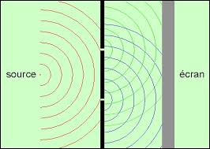
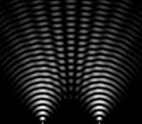
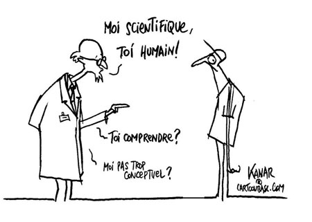

La physique quantique pour les nuls
Cette petite histoire comporte 3 chapitres :
L'autre jour, je me baladais en ville lorsque j'entendis une série de miaulements déchirants, provenant d'une petite maison donnant sur la rue. "Un chaton abandonné", pensais-je. "Pauvre bête". N'écoutant que mon bon coeur, je sonnais à la porte. Pas de réponse, mais les miaulements reprirent de plus belle. Je m'enhardis à pousser la porte qui n'était pas fermée. L'intérieur était obscur. "Il y a quelqu'un ?" Demandais-je, interdit, sur le seuil.
- Fermez cette porte ! Cria alors une voix d'homme. Le chat va s'enfuir ! - Excusez-moi, répondis-je. Je ne voulais pas vous déranger... - Attrapez ce chat ! Cria-t-il alors. Il est devant vous !
Mes yeux s'étant alors accoutumés à l'obscurité, je parvins à distinguer en effet un chaton qui tentait de se glisser entre mes jambes pour sortir. En me baissant vivement, j'arrivai à l'attraper. Le chaton miaula derechef. - Ah merci ! Dit l'homme. Ce satané chat va me rendre fou ! Mais Entrez, je vous prie.
Je fis un pas en avant, et distinguai un homme d'âge mur qui me souriait. - Je ne me suis pas présenté, reprit-t-il. Erwin Schrödinger, physicien quantique. - Enchanté, dis-je, en lui tendant le chaton. Qu'est-ce que c'est, un physicien quantique ? - Voulez-vous m'aider à le mettre dans cette boîte verte, là-dedans ? Me demanda-t-il sans me répondre. Je regardai autour de moi. Jamais je n'avais vu un intérieur aussi étrange. Quel bric-à-brac ! On aurait dit un laboratoire, plein d'appareils étranges et de câbles électriques courant en tous sens. Mais il y avait effectivement dans la pièce une sorte de congélateur dont la porte munie d'une imposante serrure de coffre-fort était ouverte, et qui contenait effectivement une boîte verte posée sur un rayon. La chose bizarre, c'était le gros pistolet, solidement fixé, pointant vers l'intérieur de la boite, dont la gâchette était reliée à un gros appareil bizarre. Tout ça dans un congélateur ! - Vous voulez vraiment mettre ce chat la dedans ? Mais pourquoi ce pistolet ? Schrödinger me regarda comme si j'étais le dernier des idiots. Sans répondre, Il posa le petit chat dans la boite, en referma prestement le couvercle, et enfin referma le congélateur, sans toutefois le verrouiller à clef. Enfin, il daigna me parler. - Mais pour prouver ma théorie, jeune homme ! La théorie quantique ! Vous voyez, Dès que j'aurais appuyé sur ce bouton (Il y avait en effet un gros bouton rouge sur le congélateur, avec une étiquette marquée «armement du système» !)... un compteur Geiger va commencer à compter les radiations émises par le plutonium que contient cet appareil, et au premier tic l'arme devrait tuer le chat. Mais comme personne ne peut l'observer... - Quoi ? Criais-je. Vous allez tuer ce pauvre chat ? Mais vous êtes un monstre ! - Mais non jeune homme ! Ce chat va simplement se retrouver dans état quantique superposé. Dans l'un des états il sera vivant, dans l'autre mort. Mais comme ce caisson de mon invention (il désigna le congélateur) est absolument hermétique et ne laisse passer aucune radiation ni aucune vibration, nous n'aurons aucun moyen de le savoir ! Vous allez voir (il appuya sur le bouton rouge). - Je ne comprends rien à ce que vous racontez. Tout ce que je vois, c'est que vous allez tuer ce chat. Et avec du plutonium en plus ! - Non, non, il n'y a que quelques atomes de plutonium dans l'appareil. Il peut se passer des jours avant que l'un d'eux ne se désintègre. C'est sans danger. Sauf pour le chat, parce que le pistolet tirera si cela arrive. (Il sourit. Ma parole, il sourit !) Mais cela sera sans conséquence car il n'y aura pas d'observateur pour le savoir. Vous comprenez ? - Non. Ou plutôt si. Vous êtes complètement timbré ! Je me mordis la langue. Dire à un fou qu'il est fou, c'était sûrement dangereux. Je commençai à reculer vers la sortie. Mais Schrödinger sourit à nouveau. - Ah, je vois. Vous ne connaissez rien à la théorie quantique ! - Euh ... Non, balbutiai-je. - Je vais vous expliquer. Nous avons le temps, je pense au moins vingt-quatre heures avant que le système ne se déclenche. - Bon, dis-je, rassuré. - A moins que ce ne soit dans une seconde. - Quoi ? Mais vous venez de dire... - Jeune homme, la désintégration béta d'un noyau de plutonium est parfaitement imprévisible. Sa demi-vie est de vingt-quatre mille ans. Seulement, j'ai mis suffisamment d'atomes dans la machine pour qu'en moyenne un atome se désintègre toutes les vingt-quatre heures. Mais c'est une moyenne, bien sûr. - Bien sûr, dis-je, n'osant le contredire. - Mais mon dispositif est bien plus astucieux. Voyez-vous, si le chat est tué par le pistolet, il deviendra plus lourd à cause du poids de la balle dans son corps, et j'ai muni la boîte d'un système de pesée qui ouvrira le couvercle. En revanche s'il est vivant, la boîte restera fermée et il ne pourra pas sortir de la boîte verte. De sorte que la seule façon pour lui de sortir de la boîte est d'être tué.
- Mais c'est monstrueux ! - Mais non. Tant que nous n'ouvrons pas ce caisson, nous n'avons aucun moyen de le savoir et le chat se trouve dans la superposition d'état « vivant et dans la boîte » ou « mort et hors de la boîte ». - Je ne comprends rien à ce que vous dites. Qu'est-ce que c'est que ce congélateur bizarre ? Et Pourquoi a-t-il une serrure ? - Un congélateur ? Grand Dieux non ! Ce caisson ré-vo-lu-tion-naire (je pouvais entendre chaque syllabe) que j'ai inventé est un container quantique absolument isolé de toute influence physique ! Il est imperméable à toutes les radiations, même aux rayons X, il est impossible, absolument impossible, de savoir ce qui se passe à l'intérieur ! Et la serrure est là pour que personne ne l'ouvre ! D'ailleurs je vais le fermer et en jeter la clef, dit-il en tendant le bras vers la serrure. - Attendez, dis-je précipitamment car un plan venait de germer dans mon esprit embrumé. Qu'est-ce que c'est qu'une superposition d'états ? Schrödinger abandonna son geste et se tourna vers moi, prenant instantanément l'air du prof ravi d'expliquer son invention au béotien que j'étais. - Je vais vous expliquer. Asseyez-vous, jeune homme (il désigna un fauteuil hors d'âge qui trônait dans un coin de la pièce, entre un énorme isolateur électrique d'où sortaient des câbles d'un diamètre conséquent, et une sorte de lessiveuse toute cabossée). Voyez-vous, reprit-il, la matière n'est ni onde ni corpuscule, elle est les deux. Comme la lumière. - ??? - Bon, reprit-il en voyant mon air ahuri, je reprends doucement. Vous savez que la lumière est une onde ? - Bien sûr. - Comment le savez-vous ? Des souvenirs de lycée que je croyais à jamais perdus affluèrent dans mon esprit. Il y avait cette petite fille oubliée, queue de cheval à la sortie... - Elle interfère ! M'exclamai-je. La lumière peut créer des interférences. Comme les vagues sur l'eau, précisais-je, tout fier. Donc la lumière est une onde. - Bien ! C'est ce que tout le monde croyait jusqu'en 1905, année où un certain Albert Einstein, celui de la relativité, oui, montra que l'effet photoélectrique ne peut s'expliquer que si la lumière est formée de corpuscules minuscules et sans masse, que l'on a appelé photons. L'effet photoélectrique, poursuivit-il sans m'en laisser poser la question, c'est celui qui fait marcher les panneaux solaires électriques. Les photons, en tombant sur les atomes de silicium de ces panneaux, les bousculent et leur arrachent leurs électrons. Et ces électrons sont récupérés par des fils, ce qui crée... - De l'électricité ! J'ai compris ! Mais alors, la lumière n'est pas une onde ? - Si ! Mais elle est aussi formée de photons. Elle est les deux. Et il n'y a pas que la lumière ! - Que voulez-vous dire ? - Eh bien, les physiciens de cette époque se sont demandés si les électrons, que l'on croyait être une sorte de particule, n'étaient pas eux aussi, à leur façon, des ondes. Et ils l'ont prouvé ! - Mais comment ? Demandais-je. On peut faire interférer des électrons ? - Bien sûr ! Les physiciens font ça tous les jours ! D'ailleurs... Il se leva, alla vers une sorte de vieille télé à tube pourvue d'un écran rond, et pressa un interrupteur. Sur l'écran, je vis apparaître des lignes vertes, qui se déformèrent, en créant une sorte de moirage comme celui qu'on peut voir en regardant la lumière du jour à travers deux fins voilages superposés. - Voila ! Dit-il. Aussi vrai que je m'appelle Erwin Schrödinger, je viens de créer une figure d'interférence avec des d'électrons. Ils sont issus de ce canon à l'électron, là, à l'arrière du tube, et ils bondissent vers l'écran. Mais entre le canon et l'écran, il y a une plaque métallique qui est pourvue de deux petites fentes très rapprochées. De sorte que seuls les électrons qui peuvent passer à travers ces fentes arrivent sur l'écran cathodique, où ils frappent des atomes particuliers qui émettent en retour la lumière que vous pouvez voir. C'est le même principe que les télévisions d'autrefois, à celui près qu'ici il y a ces deux fentes. Si je referme une des deux fentes... (Il bascula un levier sur le côté du tube)... Que voyez-vous ?
- Juste une grosse tache uniforme de lumière verte. - Et idem si je ferme l'autre fente. Il faut que les deux soient ouvertes pour voir la figure d'interférence. C'est ce qu'on appelle l'expérience des fentes d'Young. Vous voyez, continua-t-il, les électrons eux aussi sont à la fois onde et particule ! Et De Broglie a montré que cela ne vaut pas que pour les électrons, mais pour toutes les particules, tous les atomes, tout ce qui est soi-disant matériel est aussi formé d'ondes ! Même vous et moi ! Même le chat ! - Bon, dis-je, je veux bien. Mais quel rapport avec votre histoire de superposition d'état ? - Ah, fit-il, rayonnant, c'est là une des merveilles de la nature. Avec un canon à électron ordinaire, il y a normalement des milliards d'électrons qui sont émis à chaque seconde, ce qui est suffisant pour produire des interférences. Mais ce canon-ci est un peu particulier. En réduisant la tension, comme ceci... (il tourna un gros bouton), je peux faire en sorte que le canon envoie les électrons un par un. Voila. Que voyez-vous ? Je me penchai en avant - Rien du tout, dis-je. Je ne vois rien. L'écran est noir. - Oui ! Car un seul électron n'a pas assez d'énergie pour qu'on puisse voir la lumière qu'il provoque en arrivant sur le revêtement de l'écran. On ne voit rien ! - Et c'est ça que vous appelez une merveille de la nature ? - Attendez, dit, il, théâtral. Il faut mettre un appareil photo en face de l'écran. Se retournant, il alla chercher dans un recoin un appareil photographique qui devait dater du XIXe siècle, le genre qu'on voit dans les westerns, en bois, avec le soufflet en cuir et tout. Il l'installa soigneusement en face de l'écran noir. Je faillis pouffer de rire. Il ressemblait de plus en plus à Doc, le professeur foldingue de Retour vers le futur. - La plaque photographique, expliqua-t-il d'un ton doctoral, possède la propriété d'accumuler la lumière. Plus le temps de pose est long, plus on voit des détails obscurs. Vous savez ça, j'espère ? - Oui, oui, dis-je précipitamment. - Bon ! Cet appareil est une version très perfectionnée... (je faillis pouffer à nouveau en jetant un oeil à l'antiquité)... modifiée par moi en utilisant le procédé polaroïd de développement instantané. De sorte que nous allons pouvoir voir immédiatement ce que l'appareil a pu capter. Attendons encore un peu... Voila ! (il souleva un volet de bois et en sortit une plaque photographique de dix centimètres de côté). Que voyez-vous ? - Une grosse tache blanche floue sur fond noir. - Oui, parce que j'avais fermé une des deux fentes. Maintenant, je vais recommencer, en ouvrant les deux fentes. (Il remit une plaque dans l'appareil, appuya sur le déclencheur et attendit une minute avant de ressortir la plaque). Voilà, Cette fois, que voyez-vous ? - Une figure d'interférence ! - Oui ! Une figure d'interférence créée par des électrons, qui sont pourtant passés un par un dans les fentes ! Or, soit un électron est passé dans l'une des fentes, soit dans l'autre. Et souvenez-vous, si une fente est fermée, il n'y a pas d'interférence. Alors d'où vient cette figure ? - Euh...
- La seule explication, c'est que chaque électron a interféré avec lui-même, et qu'il est passé par les deux fentes à la fois, en se comportant comme une onde.  Je restai sans voix. - La théorie quantique explique ce phénomène ainsi : On pourrait penser que l'électron, au moment de frapper l'écran, peut se trouver dans deux états possibles, selon qu'il est passé par la fente numéro un ou par la fente numéro deux. Mais pour que l'interférence puisse se produire, il se trouve en réalité dans un mélange, une superposition de ces deux états. C'est cela lui permet de passer par les deux fentes à la fois. - Mais à quoi ça sert ? Demandais-je. - A quoi ça sert ? A quoi ça sert ? Gronda-t-il comme si j'avais proféré une énormité. Sachez que la théorie quantique est la plus précise de toutes les théories physiques ! Qu'elle n'a jamais, malgré tous les efforts des physiciens, pu être prise en défaut ! Qu'elle permet d'expliquer tous les phénomènes qui ont lieu aux échelles microscopiques, absolument tous ! Que sans elle nous n'aurions pas de circuits intégrés, d'ordinateurs, de panneaux solaires, de centrale nucléaires, de lasers, de lecteurs CD, de fours à micro-ondes, de matières plastiques, de... - OK, OK. Dis-je. Ne vous énervez pas, Doc (j'avais dit « Doc » malgré moi. Ça eut l'air de lui plaire car il sourit). Mais je ne vois pas le rapport avec votre chat. - Eh bien, c'est pourtant évident : si tout ce qui est matériel est également de nature ondulatoire, toute particule, tout atome, toute matière peut être préparée de telle manière qu'elle se trouve dans plusieurs états superposés susceptibles d'interférer avec eux-mêmes. On a pu le prouver avec des électrons, et avec des atomes et même de petites molécules. D'ailleurs, les électrons autour d'un atome n'ont pas réellement de position définie. Ils forment une sorte de nuage autour du noyau, et ils sont constamment à tous les endroits à la fois, avec des probabilités bien définies toutefois. On ne peut pas parler de position, ou de quantité de mouvement, pour une particule, mais seulement de densité de probabilité de présence. Ces probabilités sont calculables avec une énorme précision, grâce à mon équation, l'équation de Schrödinger ! (Il marqua une pause, pour me laisser sans doute le temps d'assimiler la génialitude de cette équation)... Mais personne ne peut dire où se trouve un électron à un instant donné. La question même n'a pas de sens. - Je ne vois toujours pas... - Vous allez comprendre, si vous me laissez parler. Je me le tins pour dit et restai coi. - Vous voyez, reprit-il, il est très facile de produire des particules, des photons ou des atomes qui sont dans une telle superposition d'état. Il y a même un effet boule de neige : quand une particule qui se trouve dans un tel mélange d'états heurte une autre particule ou un atome, l'ensemble se trouve immédiatement dans une nouvelle superposition d'état, et on peut calculer très précisément les probabilités de présence du nouvel ensemble à tel ou tel endroit. On appelle cela la fonction d'ondes : c'est une sorte de champ associé à chaque particule, ou groupe de particules, et qui s'étend dans l'univers tout entier. La valeur de ce champ, de cette fonction d'onde, en un point donné de l'espace, détermine la probabilité que l'objet considéré soit précisément en ce point. Mais il y a un hic... J'étais un peu largué. - Ah ? Lequel ? Demandais-je néanmoins. - Où cela s'arrête-il ? Dans notre expérience des deux fentes, Juste avant de frapper l'écran, l'électron se trouve dans une superposition des deux états « passé par la première fente » et « passé par la deuxième ». Quand il frappe l'écran, l'écran prend à son tour deux états possibles. Et le photon qui est émis par cet écran et qui arrive à la plaque photographique la met aussi dans deux états possibles. Idem pour notre œil lorsque nous contemplons la plaque, et pour nous même ! Et Pourtant, nous voyons bien, en regardant l'écran ou la photo, l'endroit où se trouvait l'électron. En un seul point. Alors qu'il devrait être partout ! S'il était diffusé un peu partout, il n'y aurait pas de figure d'interférence au final. Vous comprenez ?